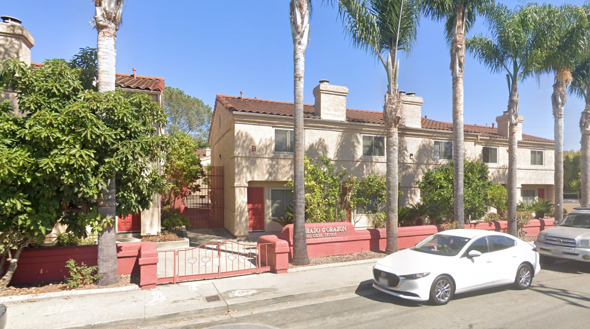

Casa St Apartments
San Luis Obispo, CA
Multi-unit apartment building in San Luis Obispo, serving Cal Poly students and locals.
View on Google Maps →Properties in San Luis Obispo, California

Multi-unit apartment building in San Luis Obispo, serving Cal Poly students and locals.
View on Google Maps →